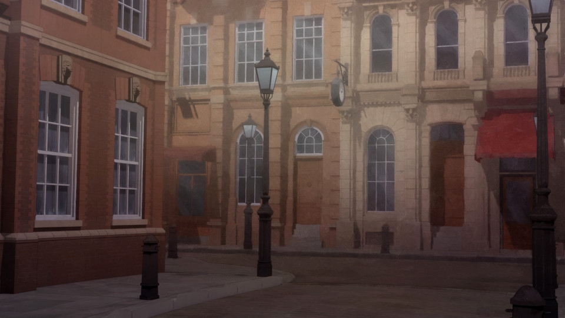
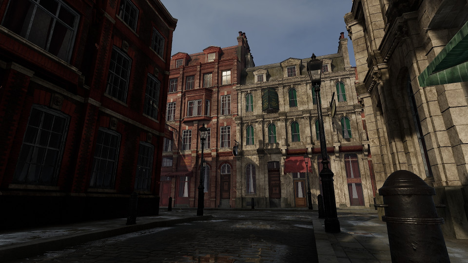
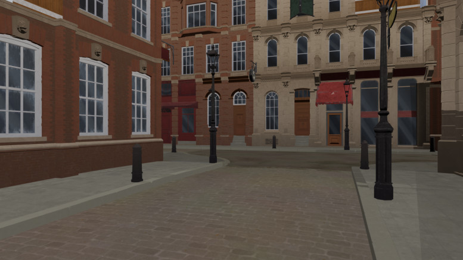
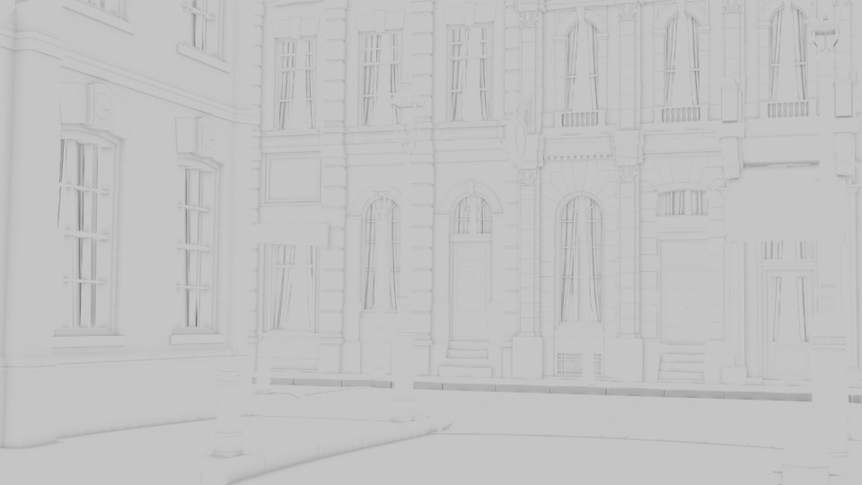
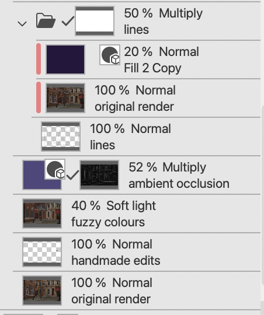
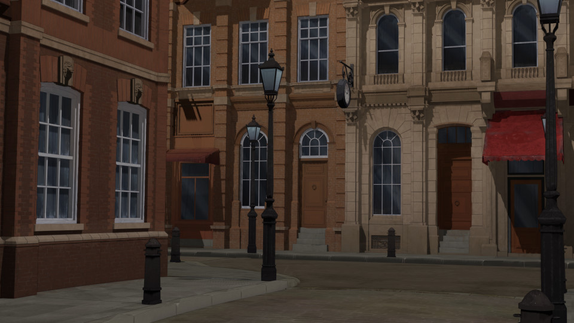
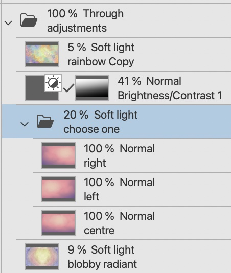
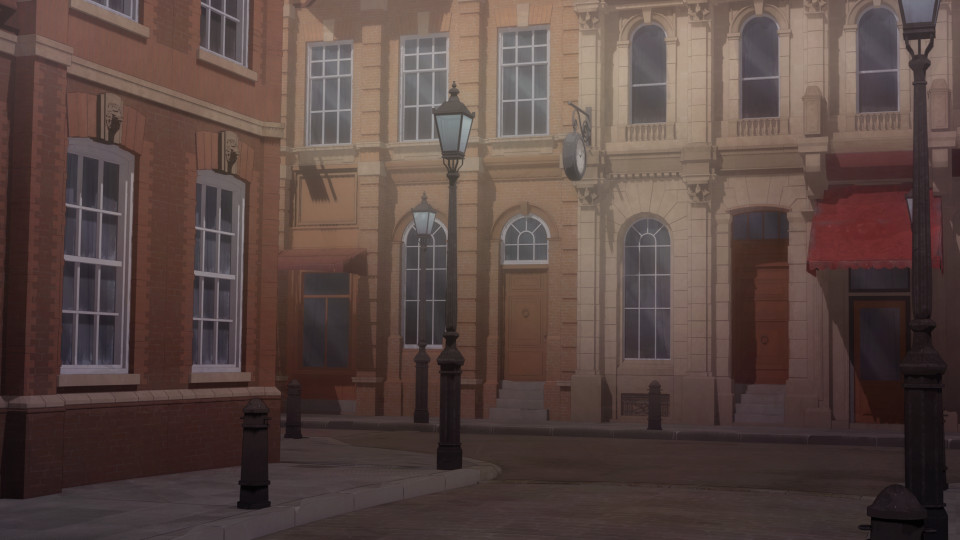
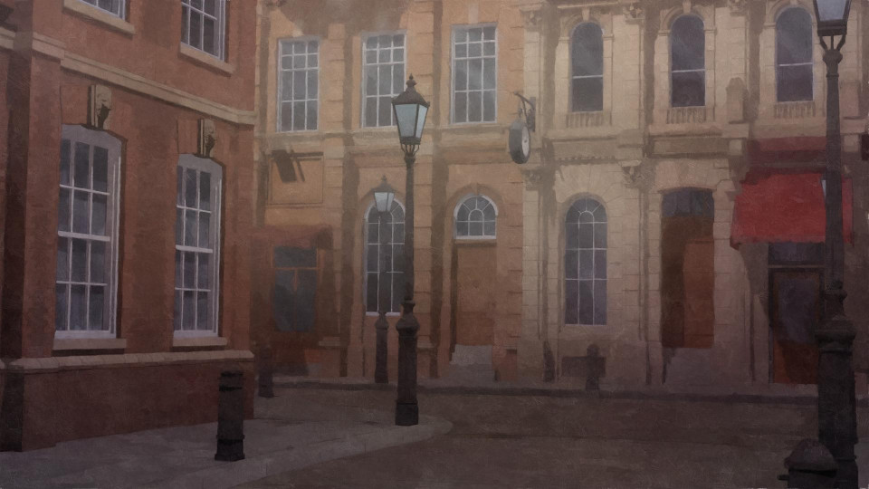

Making 3D Backgrounds from An Unreal Environment
Tags: posts, blender, tutorial, art, unreal,
This is my current workflow, I've written up a lot of these techniques separately but wanted to write up the whole process. The later parts could also be applied to other sorts of 3D renders.
I'll go through how I made 19th Century English Street Backgrounds.
Download and Export An Unreal Environment
I get most of my environments from Fab's free section, or Laertes on sale.
If you download the environment from Fab it should automatically show up as a project in Unreal engine. If you download it from somewhere else, put it in a usefully named folder in the Unreal Projects folder and open it from there.
Open the Content Browser. Find the Map or Level with the environment you want set up, and open it.
At this point you can try following my tutorial on rendering in Unreal. Here's how the Victorian Street looks in Unreal: 
If you like how the unreal render looks you're done! Otherwise it's time to edit things in Blender. Export the scene as glTF format.
Import into Blender and add toon shader
Import the glTF file you just made into Blender.
At this point I like to organise the objects into meshes, lights, cameras, and Unreal specific objects that don't do anything any more.
I then run toon_shader_process.py to make all the materials toon shaded, and fix them up one by one.
Many of the lighting/shading objects may not work properly any more, so you'll probably need to add more.
Here's the Victorian street after my first basic edits: 
And here it is after a bunch more:

Create and save renders in Blender
You can do this manually but I use render_cameras.py.
This saves the following files:
Render:
Lines:

Mist (distance from camera):

Ambient Occlusion/ao (corner shadows): 
In future I may also save the Bloom which makes light sources and bright areas glow.
Edit and Layer Renders in Image Editor
I use Clip Studio Paint but any decent image editor like Krita or GIMP would work too.
Turning the Mist and Ambient Occlusion renders into masks
There's probably a better way to do this, and the specific method is likely different in other programs.
- Edit: Tonal Correction: Level Correction to make the whites whiter and blacks blacker.
- Edit: Convert Brightness to Opacity
- Level: Selection from Layer
- Add a new mask to whatever I wish to mask using this selection.
- If necessary, apply Edit:Tonal Correction:Reverse Gradient to the mask to flip the opacity.
Making a rough paintover
Take the base render and do a quick fuzzy paintover with a textured brush, softening the edges and adding extra colour here and there:
Layers
Base Colours and Lines
Layer the base render, any edits I want to draw by hand (eg I removed a pale spot), and the fuzzy paintover as a soft light layer.
Apply a dark purple multiply layer using the ambient occlusion mask created above. Apply another dark purple multiply layer using the lines as an alpha mask, softened by a semi-transparent version of the original render. Mask out any lines you don't like.
Background and colour edits

Create a folder which uses the mist mask created above. This will adjust the background elements of the picture. Add colour/shading adjustments, and a semi-transparent blurred version of the original render.
In some cases I also have a folder which just adjusts the foreground.
Add any general extra colour/shading edits.

Generic adjustments
I have a generic adjustments folder I apply to every background. Here's the final result: 
Filter in Fotosketcher and layer
I batch process the images via fotosketcher.
Add filtered version in Image Editor

I apply an edited version of the mist/background mask to the fotosketcher result, bumping the blacks up to light grey and setting the overall opacity to 70%. For this specific image I decided to also add a little extra contrast.
Here's the final result!
I'm probably going to tweak the final image some more after posting this tutorial but will try and update this post with any significant new techniques I come up with. And if you try out these techniques yourself, on my renders or something else, I'd love to see it, there's so many ways someone with different tastes could do things in different ways.